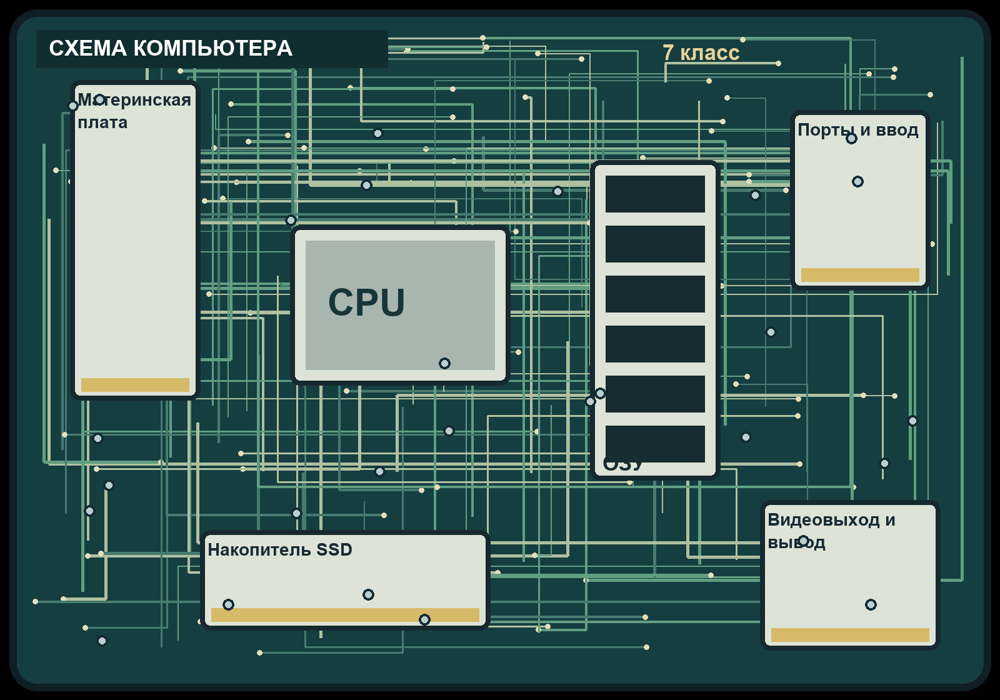

Учебное пособие с интерактивными заданиями. Цель: научиться объяснять функции компонентов компьютера и путь данных от ввода до результата.

Страница 2 из 14
Оглавление и маршрут
1. Обложка
2. Оглавление
3. Условные обозначения и приветствие
4. Четыре функции
5. Процессор
6. Два вида памяти
7. Ввод и вывод
8. Внутри системного блока
9. Путь данных
10. Практика
11. Учебный кейс
12. Итоговый тест
13. Выводы и обратная связь
14. Источники
Страница 3 из 14
Как работать с пособием
Здравствуйте! Я предлагаю разобраться, что происходит внутри компьютера, когда мы печатаем, считаем и сохраняем файл.
ЧИТАЙ — короткое объяснение. ИССЛЕДУЙ — нажми на элемент схемы. СЛУШАЙ — включи аудио. СМОТРИ — запусти видео. ПРОВЕРЬ — выполни задание и прочитай объяснение.
Двигайся по страницам по порядку. После двух-трёх экранных заданий переключись на устную или бумажную работу. Если задание трудно, вернись к схеме.
Страница 4 из 14
Четыре основные функции
Компьютер принимает данные, обрабатывает их по программе, хранит данные и представляет результат. Эти функции выполняют разные устройства.
Пример: клавиатура вводит числа, процессор выполняет вычисление, память хранит рабочие данные, монитор показывает результат.
Исследуй плакат и назови по одному устройству для каждой функции. Материнская плата соединяет компоненты: её назначение шире, чем одна из четырёх учебных категорий.
Процессор выполняет команды программы. Он производит арифметические и логические операции и управляет вычислениями.
Чтобы вычислить 2 + 3, нужно получить данные и команды, выполнить операцию и передать результат. Процессор обращается к памяти во время работы.
Частота — только одна из характеристик. Сравнивать компьютеры по одной частоте некорректно: значение имеют архитектура, число ядер, память и задача.
Проверь себя: кто хранит фотографию после выключения — процессор или накопитель? Ответ: накопитель.
Страница 6 из 14
ОЗУ и накопитель
Оперативная память хранит команды и данные текущей работы. В обычном ПК она энергозависима. Накопитель хранит программы и сохранённые файлы долговременно.
Открытый документ участвует в работе программы через ОЗУ. Команда «Сохранить» записывает файл на накопитель. При выключении без сохранения последние изменения могут исчезнуть.
Аналогия: ОЗУ — рабочий стол, накопитель — шкаф для сохранённых материалов. Аналогия помогает понять назначение, но не описывает физическое устройство памяти.
Сенсорный экран совмещает две функции: выводит изображение и принимает касания. МФУ объединяет несколько устройств: сканер вводит изображение, принтер выводит его на бумагу.
Не путай устройство и интерфейс. USB — способ подключения; к нему подключают и клавиатуру, и накопитель. По одному разъёму нельзя определить учебную функцию устройства.
Страница 8 из 14
Внутри системного блока
Материнская плата соединяет процессор, оперативную память и другие компоненты. Блок питания подаёт электрическую энергию, система охлаждения отводит тепло.
Графический процессор подготавливает изображение; он может быть встроенным или отдельным. Накопитель хранит программы и файлы.
Не вскрывай подключённый к питанию корпус. Для изучения используй авторскую схему и виртуальный информационный слой. Эта схема учебная и не является монтажным чертежом конкретной платы.
Представим вычисление суммы. 1. Пользователь вводит 2 + 3. 2. Программа использует оперативную память для рабочих данных. 3. Процессор выполняет вычисление, обращаясь к памяти. 4. Монитор показывает 5. 5. По команде пользователя результат сохраняется на накопитель.
Реальный обмен сложнее и включает контроллеры, шины и кэш. Наша схема показывает основные роли устройств. Посмотри авторское видео и объясни каждый шаг своими словами.
Задание 1. Классифицируй семь устройств. Затем проверь ответ и прочитай объяснение.
Задание 2. Восстанови последовательность действий при вычислении.
Задание 3. Объясни ошибку: «Если купить большой SSD, оперативная память больше не нужна». Ожидаемый ответ: SSD хранит файлы, ОЗУ нужна для текущей работы; эти устройства имеют разные роли.
После проверки исправь ошибку и повтори попытку. Здесь можно пользоваться плакатом.
Учебные условия: цена и прочие характеристики одинаковы. A: 4 ГБ ОЗУ, SSD 128 ГБ. B: 8 ГБ ОЗУ, SSD 256 ГБ. Нужно работать с текстами и многими вкладками.
Выбери вариант и объясни две характеристики. Ожидаемый выбор — B: больше ОЗУ для одновременной работы программ и больше места для файлов. Это не обещание определённой скорости и не рекомендация покупки реальной модели.
Критерии: выбор связан с задачей — 1 балл; объяснение ОЗУ — 1; объяснение SSD — 1; указание ещё одной нужной характеристики — 1.
Проверь аргументы
ОЗУ помогает работать с несколькими программами, SSD хранит файлы. Для реального выбора нужны требования программ и другие характеристики.
Страница 12 из 14
Итоговый тест
В тесте 10 вопросов, за каждый верный ответ — 1 балл. Сначала ответь на все вопросы, затем отправь результат. В контрольном режиме не открывай подсказки.
9–10 баллов: материал освоен уверенно. 7–8: повтори неточности. 5–6: повтори тему и выполни тренировку. 0–4: вернись к плакату и разбери примеры с учителем.
Веб-результат остаётся в этом браузере и не отправляется преподавателю. Его можно скачать как текст.
Теперь ты можешь различить ввод, обработку, хранение и вывод; объяснить назначение процессора, ОЗУ и накопителя; описать простой путь данных.
Запиши: какое различие стало понятным? Какой вопрос остался? Приведи пример устройства с двумя функциями.
Домашнее задание: нарисуй схему четырёх функций и подбери по два примера для ввода и вывода. Дополнительно объясни, почему несохранённый файл может исчезнуть. Ответы формы можно скачать; автоматической отправки нет.
Ответ не отправляется автоматически.
Страница 14 из 14
Источники и авторство
Содержание написано для этого комплекта. Схемы, задания и видео созданы для работы с помощью ИИ и проверены на согласованность. Озвучивание — синтезированная русская речь. Изображения устройств являются условными учебными схемами.
Для проверки темы и методики: библиотека МЭШ, методическое пособие и рабочая программа ЕДСОО, Виртуальный компьютерный музей. Ссылки приведены ниже. Материалы внешних сайтов не перепубликованы.